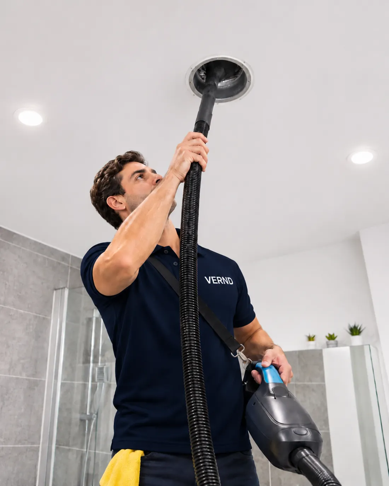

Síur gleymast
Það er auðvelt að gleyma reglulegum síuskiptum þegar kerfið er falið í tæknirými.
Fáðu aðstoð við reglubundið viðhald loftræstikerfisins — síuskipti þar sem við á, umhirðu aðgengilegra ventla og skýra samantekt. Engar óþarfa viðgerðir eða óljós verkefni.
Skilgreind þjónusta og skýr verð. Netbókun opnar þegar greiðslukerfið er tilbúið.

MVHR-umhirða ✦Það er auðvelt að gleyma reglulegum síuskiptum þegar kerfið er falið í tæknirými.
Dökkir rykhringir við loftventla geta bent til þess að tími sé kominn á umhirðu.
Þú veist kannski ekki hvaða síur passa eða hvaða viðhald má framkvæma sjálfur.
Dæmi um algengar tegundir loftræstikerfa með varmaendurvinnslu. Ekki þarf að vita allar upplýsingar um kerfið til að senda fyrirspurn.
Sýnidæmi um framleiðendur og gerðir. Samhæfni og síuverð þarf að staðfesta áður en þjónusta er bókuð.
Dæmigerð kerfisgerð: SAVE VTR 300
Dæmigerð kerfisgerð: Nordic S4
Dæmigerð kerfisgerð: Model 130
Dæmigerð kerfisgerð: Domekt R 400 V
Skoðaðu merkiplötuna á tækinu, ef hún er aðgengileg, og sendu okkur tegund eða gerð. Við staðfestum hvort þjónustan henti og hvaða síur þarf áður en heimsókn er ákveðin.
Myndir og vörumerki eru aðeins til að auðvelda auðkenningu kerfa. Loftvernd er ekki í samstarfi við framleiðendurna. Ganga þarf úr skugga um birtingarheimildir fyrir ljósmyndum áður en síðan er birt opinberlega.
Fyrirfram skilgreind verkefni og samhæfar staðlaðar síur innifaldar fyrir gjaldgeng kerfi.
Umhirða notendaskiptanlegra sía og aðgengilegra ventla eftir leiðbeiningum.
Þjónustusamantekt sem hjálpar þér að muna hvað var gert.
Veldu þá þjónustuleið sem hentar og skoðaðu verð og umfang.
Veldu bókunartíma í Noona og gefðu upp tegund og gerð kerfisins.
Þegar Noona er tengt færðu staðfestingu samkvæmt skilmálum bókunarkerfisins.
Raunverulegar umsagnir sem sýna hvers vegna fólk pantar fyrirbyggjandi viðhald.
Við tókum eftir því að svartir hringir voru farnir að myndast í kringum suma loftventlana, sérstaklega í svefnherbergjunum. Við héldum að þetta væri bara venjulegt heimilisryk en ákváðum að láta fara yfir loftræstikerfið. Ventlarnir voru hreinsaðir og kerfinu sinnt. Við erum mjög ánægð með muninn.
Við höfum verið með loftræstikerfi með varmaendurvinnslu síðan við fluttum í nýbygginguna okkar og vissum satt að segja ekki að það þyrfti að skipta reglulega um síurnar. Eftir að hafa séð ástandið á gömlu síunum í þjónustuheimsókninni ætlum við svo sannarlega að bóka reglulegt viðhald.
Við tókum eftir móðu á svefnherbergisgluggunum flesta morgna. Við vissum að það væri loftræstikerfi í húsinu en höfðum eiginlega ekki hugsað um viðhaldið. Við bókuðum þjónustu til að láta skipta um síur og fara yfir kerfið.
Dragðu sleðann til að bera saman sýnidæmi af síum og aðgengilegum loftventlum. Myndirnar eru til skýringar.
Við skráum hvaða aðgengilegu svæði voru yfirfarin, hvað var gert og hvaða atriði þarf hugsanlega að láta fagmann skoða.
Við einbeitum okkur að fyrirbyggjandi viðhaldi, ekki viðgerðum eða loftflæðisstillingum.
Bókunarkerfið verður tengt við Noona. Greiðsluskilmálar verða sýndir við bókun.
Við stefnum á skipulagða morguntíma í Reykjavík og nágrenni.
Veldu síuskipti eða ítarlegri umhirðu. Verðin innihalda samhæfar staðlaðar síur fyrir þau loftræstikerfi sem falla undir þjónustuna.
Verð gilda fyrir skilgreind gjaldgeng kerfi og venjulegt aðgengi; skilmálar, þjónustusvæði og síusamhæfni þurfa að vera skýr við bókun. Engin rafmagnsvinna, bilanagreining, jafnvægisstilling eða vottuð úttekt er innifalin.
Já, við biðjum um að fullorðinn einstaklingur sé á staðnum meðan heimsóknin fer fram, svo hægt sé að tryggja aðgang og fara yfir niðurstöðuna.
Tíminn fer eftir umfangi þjónustu, aðgengi og gerð loftræstikerfis. Áætluð tímalengd verður staðfest þegar heimsókn er bókuð.
Það nægir að hafa gott aðgengi að tækinu eða kerfinu og svæðinu í kring. Þú þarft ekki að taka neitt í sundur. Gott er að hafa tegund og gerð tækis tiltæka ef þú veist hana.
Hafðu samband eins fljótt og þú getur. Við reynum að finna annan lausan morguntíma. Nánari skilmálar verða birtir áður en bókun opnar.
Greiðsluskilmálar birtast í Noona þegar netbókun hefur verið virkjuð. Samhæfar staðlaðar síur eru innifaldar fyrir gjaldgeng kerfi.
Já, samhæfar staðlaðar síur eru innifaldar fyrir þau kerfi sem falla undir þjónustuna. Athuga þarf tegund kerfis fyrir staðfestingu.
Nei, Loftvernd sinnir skilgreindu, aðgengilegu notendaviðhaldi. Rafmagnsvinna, viðgerðir, loftflæðismælingar, stillingar og vottun eru ekki innifalin.
Skoðaðu þjónustuleiðirnar, veldu lausan tíma og skráðu tegund og gerð loftræstikerfisins í Noona-bókuninni.
Netbókun í undirbúningi: Greiðslutenging er ekki virk enn. Bókanir og fyrirframgreiðslur opna þegar þjónustan hefur verið prófuð.
Veldu þjónustuleið hér að ofan og haltu áfram í Noona þegar bókun hefur verið virkjuð.
Bókun opnar fljótlegaÞegar Noona-tengillinn er settur inn birtast hér bókunarmöguleikar fyrir Loftvernd. Veldu þjónustuleið og staðfestu kerfisgerð í bókuninni.
Skoðaðu þjónustuleiðirnar. Netbókun opnar þegar greiðslukerfið hefur verið virkjað.
Skoða þjónustuleiðir ↗